사업·아트·프로그램에 대한 이해를 바탕으로 직군 사이의 언어를 번역해 협업을 매끄럽게 만들 수 있습니다.
게임 디자인 전반에 걸친 다양한 경험을 바탕으로, 복잡한 구조를 사용자 관점에서 최적으로 재구성하는 데 자신 있습니다.
감이 아니라 기획 의도와 맥락을 근거로 UX를 판단하고, 사례 중심으로 설득력 있고 실현 가능한 방향을 제시할 수 있습니다.
정답을 고집하기보다 여러 의견을 폭넓게 받아들이고, 거기서 빠르게 결론을 내 다음 단계로 넘어갑니다. 원칙은 세우되 피드백 앞에서는 유연하게 바꿉니다.
게임 만드는 일을 오래 해왔지만, 20대 초반엔 영국에서 사회복지사로 일했고 30대 초반엔 중국에서 인터넷 쇼핑몰을 운영했습니다. 주요 시장을 현지에서 몸으로 겪어봤기에, 그 경험을 살려 영미권과 중화권에서 잘된 서비스 사례의 맥락을 빠르게 찾아내 분석하고 소화해 프로젝트에 적용할 수 있습니다.
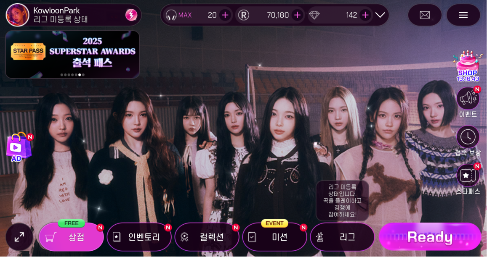
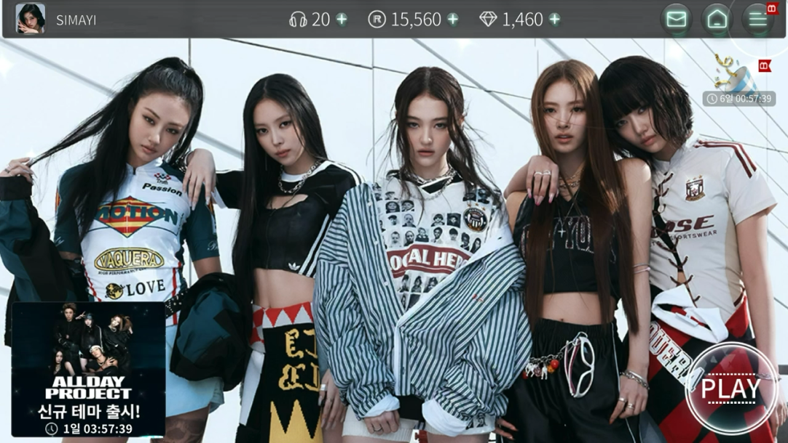
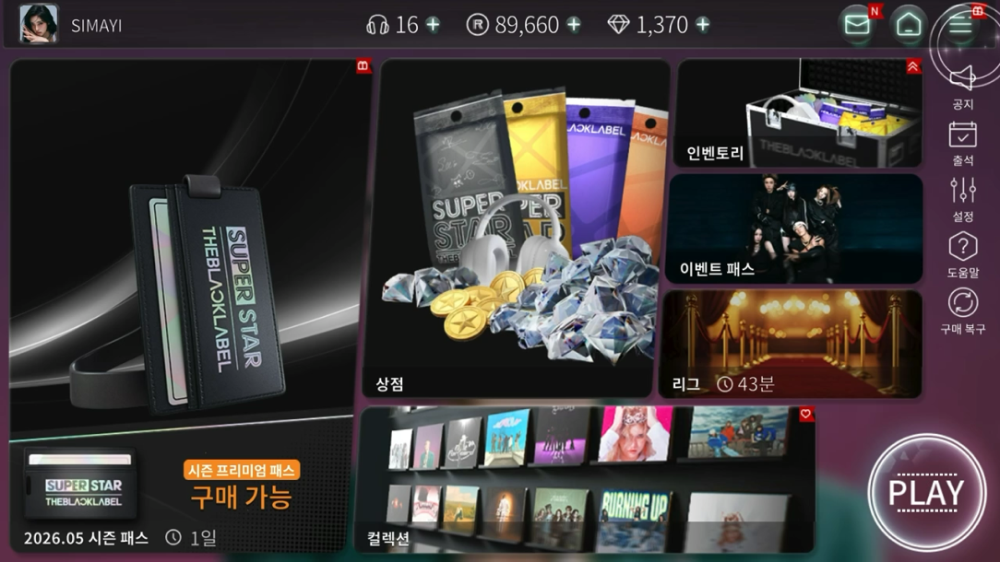
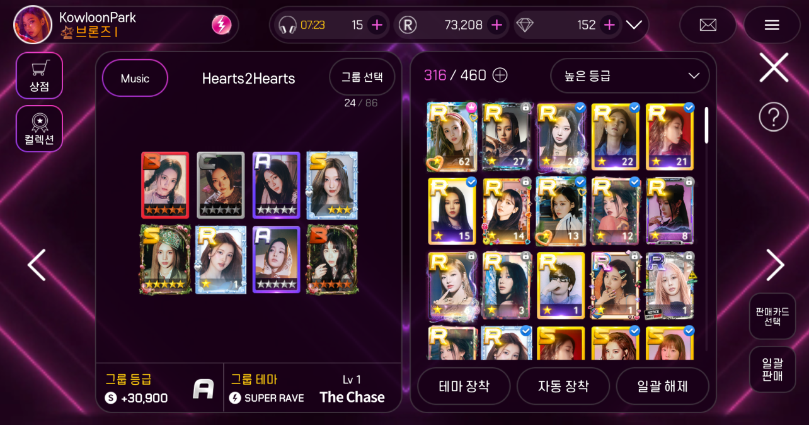
→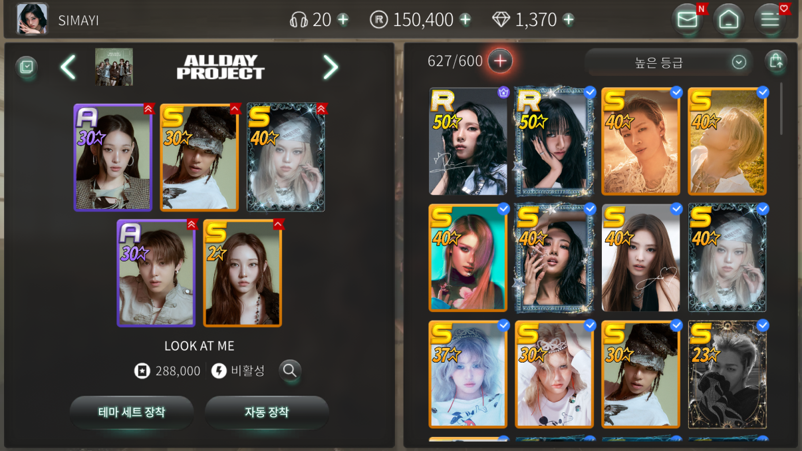
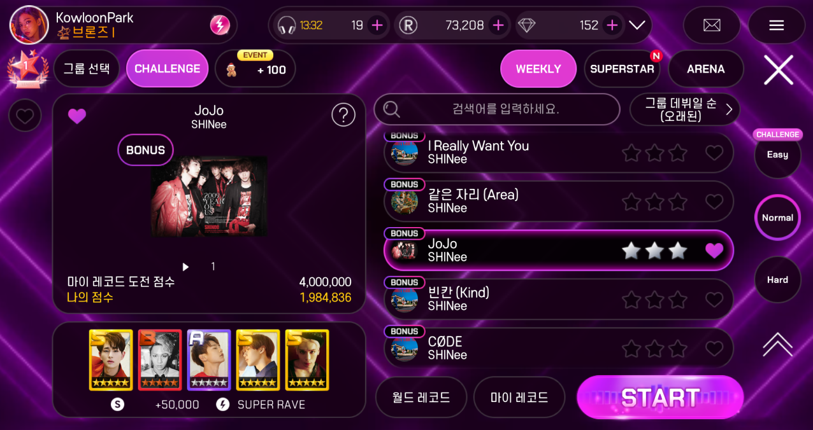
→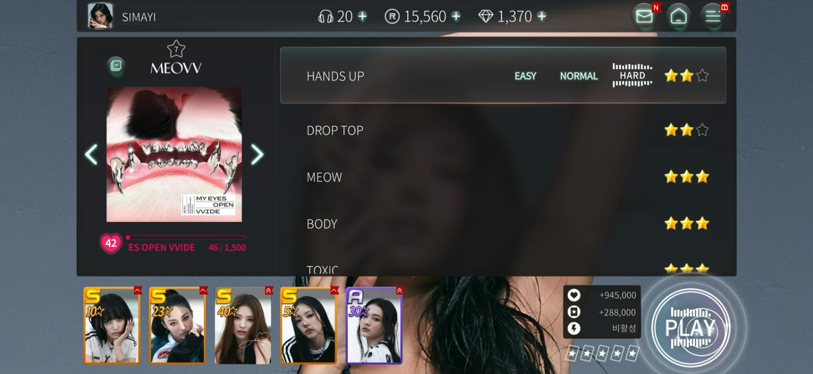
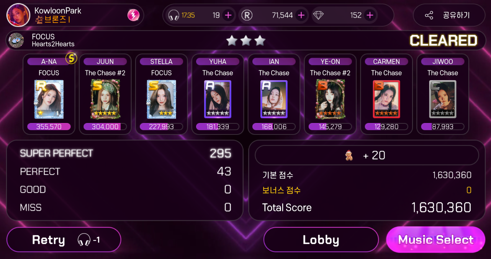
→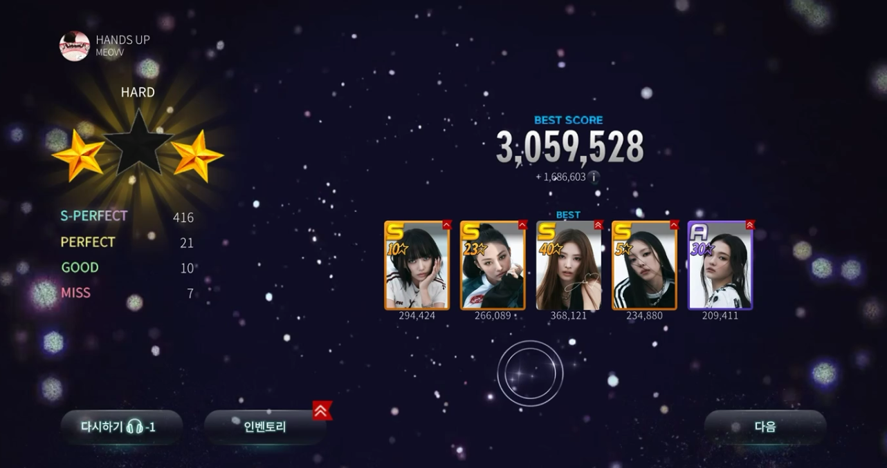
뷰·팝업·툴팁·탭을 원칙 없이 무분별하게 씀. 화면마다 버튼과 이미지가 서로 더 중요하다고 경쟁함.
케이스마다 고치면 끝이 없음. 코어 루프를 명확히 하고, 기대 경험 단위로 화면을 분리해야 함.
UI 컴포넌트 활용 원칙을 세우고, 코어 루프·구매 경험을 중심으로 UX를 재설계.
개선 버전 출시 후, 피드백을 반영해 지속 개선·모니터링.
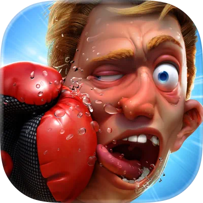
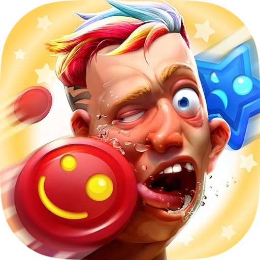
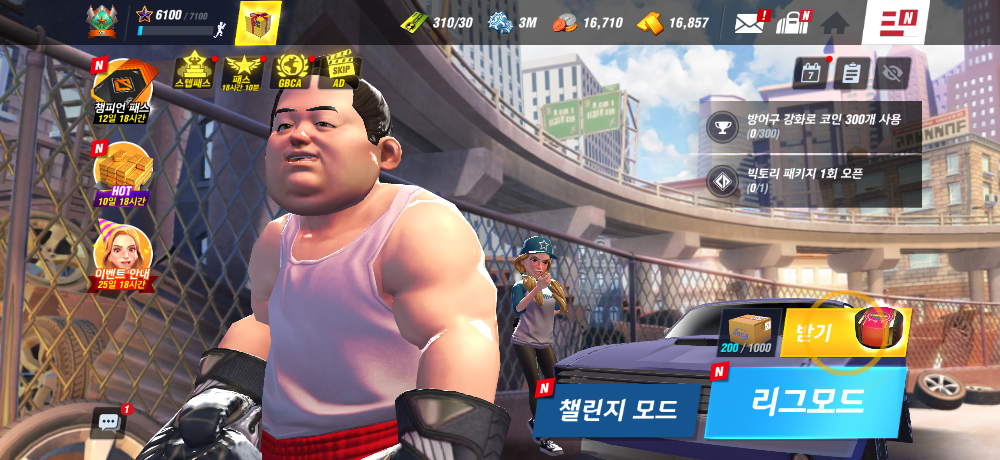
→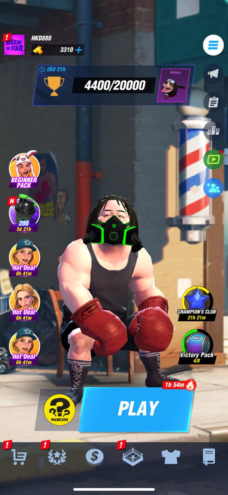
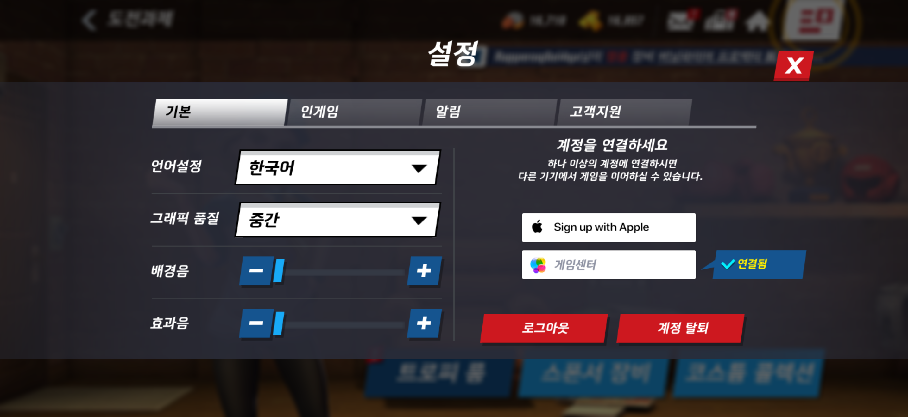
→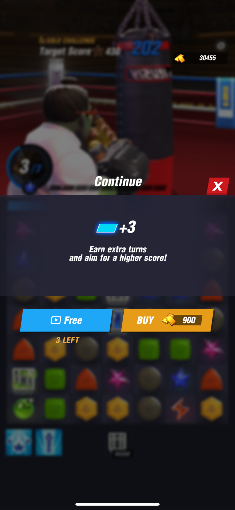
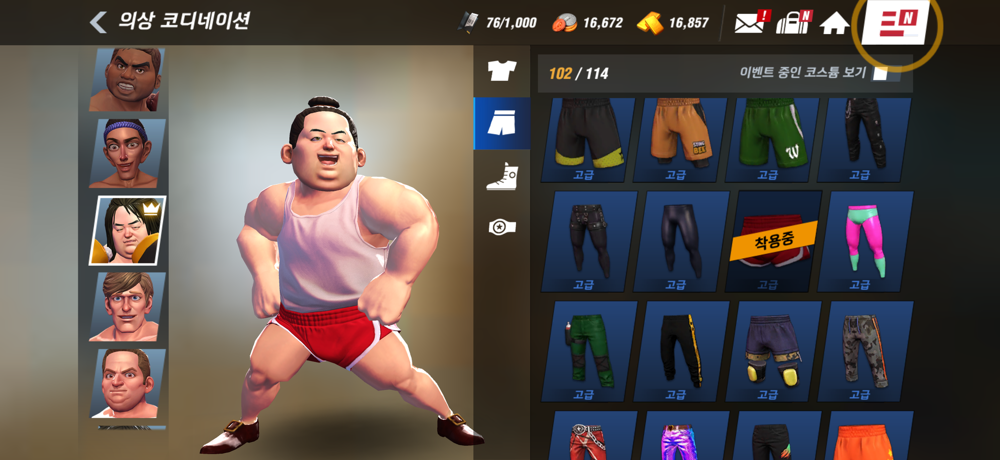
→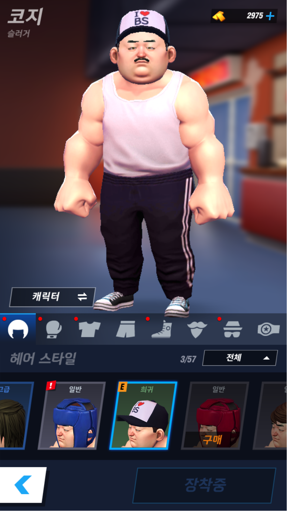
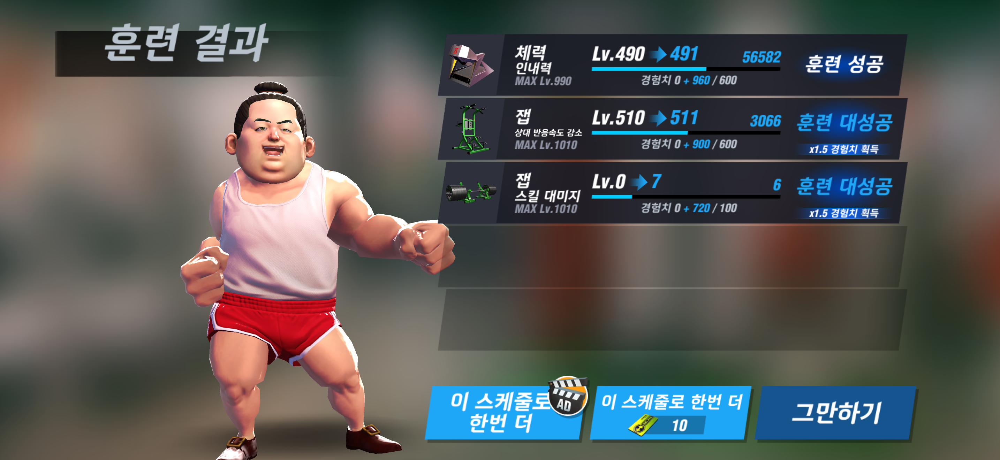
→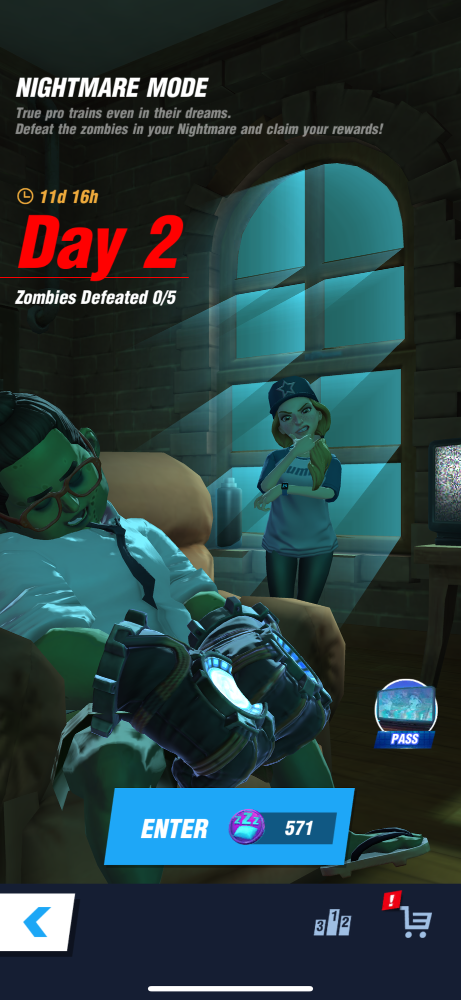
개발 속도를 확보하려면 원작 Boxing Star의 UI 컴포넌트와 3D 리소스를 그대로 재활용해야 했습니다.
가로뷰 원작을 세로뷰로 옮기는 과정에서 레이아웃을 전면 재구성해야 했습니다.
코어 루프를 먼저 설계하고, 화면 단위로 정보 우선순위를 다시 정리했습니다.
원작의 코어 컨셉을 이어받아, 빠르게 결정을 내리며 UI/UX 결과물을 순조롭게 완성했습니다.
각 화면을 디렉터가 표방한 의도 8개 관점으로 통과시킨다. (트집이 아니라 입체 해부)
| 화면 / 기준 | P1 깊이+접근 | P2 빌드 따라가기 | P3 시각 명료 | P4 조작 유연 | 서사 · 다이제틱 |
|---|---|---|---|---|---|
| PoE2 스킬 화면 | ✎ 평가 | ✎ ★디렉터 자백 | ✎ | ✎ | ✎ 맥락 단절? |
| D4 정복자 화면 | ✎ | ✎ | ✎ | ✎ | ✎ ★표현 vs 맥락부재 |
| (여정상 화면 추가) | ✎ | ✎ | ✎ | ✎ | ✎ |
※ 디아4 기준 D1 선택 / D2 점진공개 / D3 입력통합 / D4 표현 — 별도 격자로 병렬 분석
이 분석은 내 주관이 아니라, 디렉터가 표방한 의도를 기준으로 한다. 가장 강한 비판은 "그들이 말한 기준으로 그들을 평가하는 것".
추가 인용 자리 — P1(깊이+접근성)·P3(시각명료)·D2(점진공개)·D3(입력통합) 등 다른 기준을 뒷받침할 디렉터 발언 발굴 시 같은 형식으로 추가